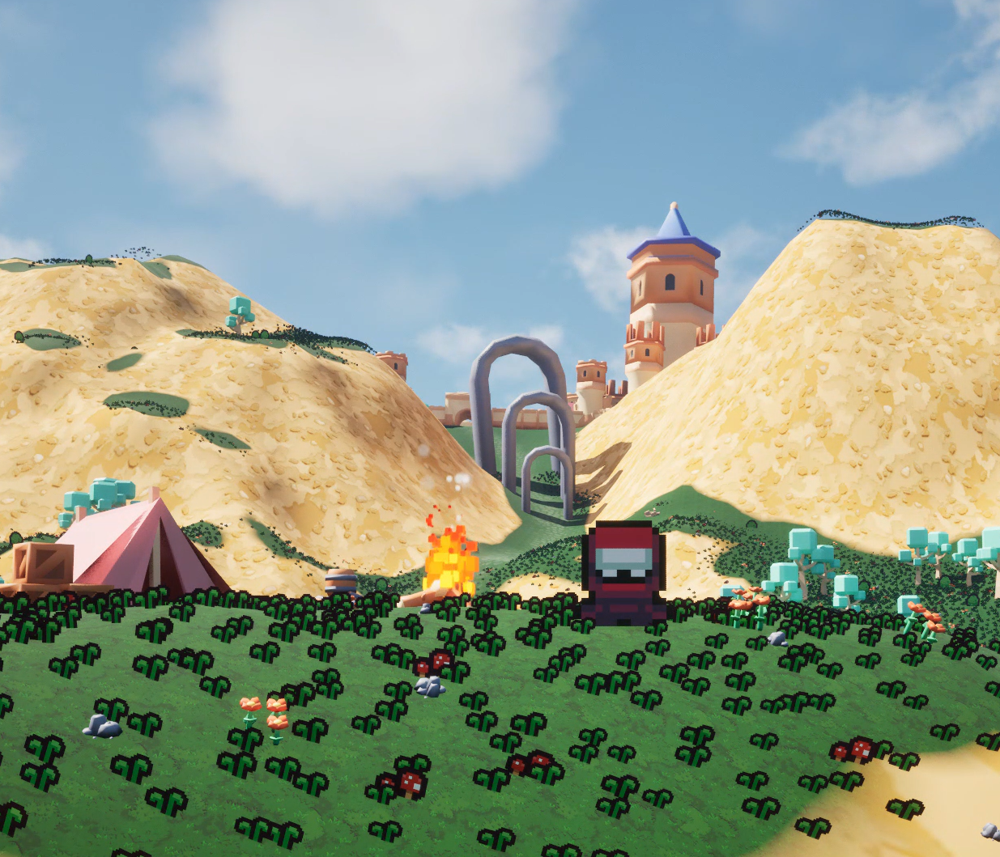
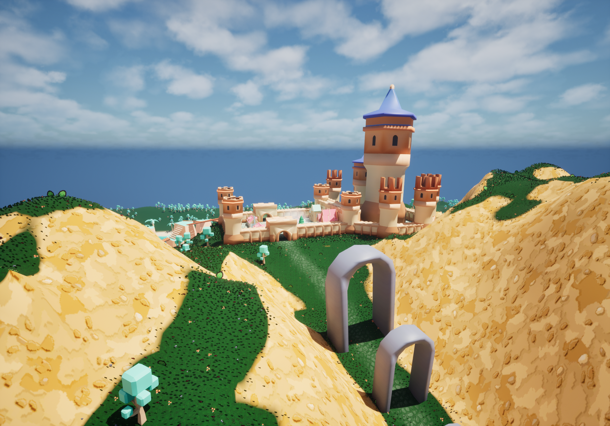
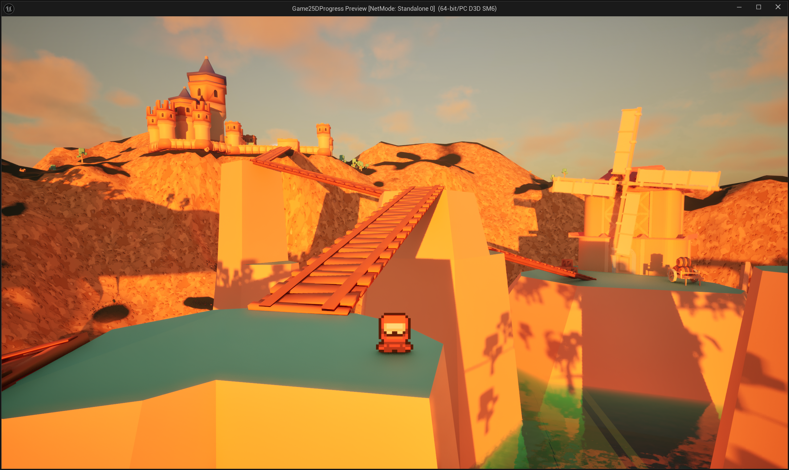
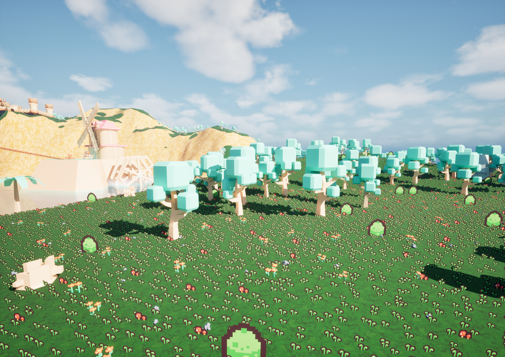
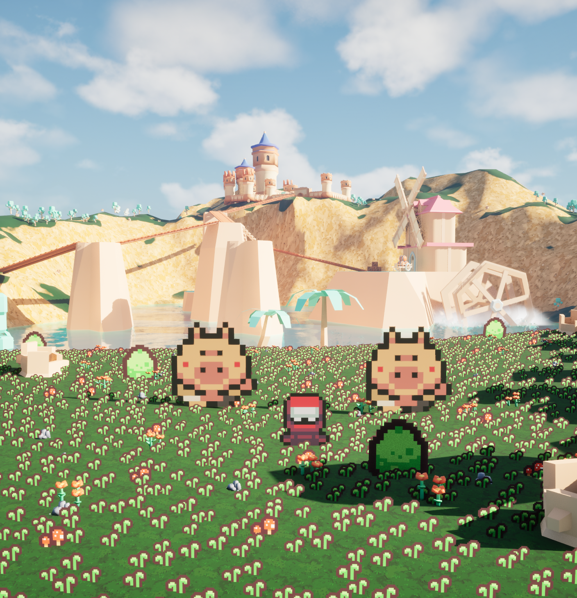
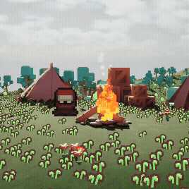

2D MEETS 3D
Project Description
2D meets 3D is a project that explores the combination of 2D and 3D visual elements in a single game environment made in Unreal Engine 5. My goal was to create an interesting visual experience combining both 2D and 3D elements while taking advantage of the strengths of each.
To make this project, I used free assets from the Unreal Engine Marketplace (3D assets) and itch.io (2D assets).
Demonstration
Although there is no playable version of this project, you can see demonstration videos on this playlist.
Here is a collection of screenshots of the project (please click on the left and right sides of the image to navigate).







Process
I will now go over my process and the challenges I encountered while making this project. You can find the full Unreal project on my GitHub repository.
Procedural landscaping
I made all the landscaping using Unreal's procedural tools. My goal was to set up a believable environment that combined 2D and 3D assets.
First, I created a custom material that dynamically adapts to the terrain's slope: grass for flat surfaces and rock for steeper inclines. You can see the blueprint of this material in the corresponding image in the opposite carousel and a demonstration in this video.
Secondly, I terraformed the map. I used Bezier-based spline brushes to define terrain contours manually and then adjusted the noise and erosion parameters to give it a more organic feel. This allowed me to create controlled chaos that mimics nature's behavior.
Finally, I used procedural foliage to decorate the map with 2D and 3D assets. To integrate the 2D assets naturally, I gave them a billboard effect. You can see a demonstration of the foliage in this video and how I implemented the billboard effect in the corresponding blueprint in the carousel.
Actors
I decided to make the player and enemies 2D sprites to fully embrace the combination of 2D and 3D.
To ensure smooth integration, the 2D sprites needed to always face the camera. I achieved this by modifying the master blueprint of the actor. However, simply forcing the characters to face the camera at all times would have felt unnatural and visually flat.
To solve this problem, I dynamically change which sprite is displayed (front, back, or side) based on the camera's position and the direction the actors are moving. You can see a demonstration of this in this video.

Bringing life to the environment
I used Level Sequences and Niagara systems to add movement to the world. My goal was to bring life to the environment.
I learned to use Niagara to create dynamic environmental effects such as the campfire and the water disturbed by the windmill. These effects respond to procedural parameters, allowing me to simulate natural movement.
Working with Niagara helped me better understand procedural methods by forcing me to control randomness in order to reproduce natural phenomena. I would like to experiment more with VFX in the future and create more complex effects.
In this video, I demonstrate how I changed the radius of the particle spawn area to give the effect an overall fire shape.
In this video, I demonstrate how I modified the color of the particles based on the time since they spawned, creating a more natural-looking fire.
